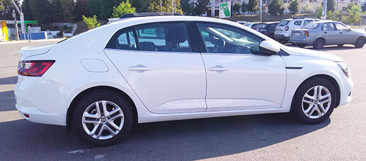

Это рассказ про мой Megane Sedan
Привет, меня зовут Радомир и я хочу поделиться с тобой своим отзывом про автомобиль Renault Megane Sedan четвертого поколения. Конкретно мое авто сделано в 2017 году, а начал я его єксплуатировать в мае 2018-го года. Комплектация у него средняя - ZEN, двигатель 1,5л, трансмиссия - "робот" с двойным сцеплением. Комплектация состоит из:
- Задний парктроник
- Подогрев передних сидений
- Складывающиеся зеркала (дополнительная опция)
- Ключ-карта (дополнительная опция)
- Двузонный климат-контроль
- Датчик света для фар
- Стеклоподъемники всех дверей. Но, кажется, их ставят на все комплектации меганов, я ручек не видел нигде
Дизайн, внешний вид

В первую очередь очаровывает, как для меня, - крутой внешний вид. Крутой я имею ввиду в плане красоты. Очень стильный дизайн. Дизайнерам нужно дать премию какую-то (хотя, я думаю, они уже получили ее за этот автомобиль) за такое совершенство. Хюндай акцент - уступает, фольксваген поло - уступает, шкода фабия - уступает, тойота королла - ну для меня тоже уступает, но тут спорить не буду - для нее тоже найдутся любители. Стильные линии крыльев, арок, красивые фары. Но самая изюминка - это дневные ходовые LED-огни, как передние, так и задние. Передние - их видно издалека. Когда еду, то в зеркало заднего вида всегда можно увидеть издалека эффектные огни нового мегана, их не спутаеш ни с чем :). Особенно мне нравиться, что линия диода передней фары неразрывна. Ну как, там на самом деле в верхнем углу есть разрыв, но издалека его не видно. Например, в новых Renault Talisman Renault Koleos дизайнеры решили сделать разрыв в линии переднего диода. Как по мне, это уже не так стильно. Еще одна прикольная "фишка" - задние огни светятся всегда, и днем тоже. Поэтому в потоке также всегда можно увидеть издалека меган и не спутать его ни с чем. У Талисмана, Кадьяра, Колеоса, эти огни задние загораются только при включении габаритов/света. А у Мегана они горят всегда.
По поводу расхода топлива
В инструкции написано, что расход смешанного цикла составляет 5,3л/100км. По факту у меня средний расход никогда не падал меньше 6,9л/100км, но чтобы так получалось, то необходимо очень стараться - нажать ЭКО-режим, пытаться не включать климат-контроль. А так, то и все 7,9-8,3л/100км получается в среднем за месяц.

Отделка салона, пластик

Просто отличный! Приятный на ощупь. Мне приходилось ездить в такси на разных автомобилях: и в Октавии, и в Киа Оптима, Киа Спортэйдж, Хюндай Соната, Мазда 6 и много других. Так вот: пластик на дверных картах, торпедо, на ручках открытия дверей, да просто все - у мегана лучше! Да, меган - это бюжэетное авто среднего, даже нижнего среднего класа (лично мое мнение), но, блин, конструкторы и маркетологи мегана - вы запихнули в него качественный пластик :) На свадьбе меня возил Mercedes E-Class то ли 2011-го, то ли 2012-года выпуска. Конечно же был я в качестве пассажира. То мне еще тогда показалось, что как для мэрса, то какой-то дешевый пластик. Ну вроде как и авто не дорогое. Но стоп, это же Мерседес! Теперь, владея меганом, я понимаю, что не стоит переплачивать за брэнды - возьмите рено меган четвертого поколения и там все будет!
Двигатель. Динамика
Дизель. В сочетании с коробкой-автоматом с двойным сцеплением. Скажу честно - до этого автомобиля у меня не было опыта вождения на автомате. На механике я суммарно проехал где-то 350 тыс. км. Поэтому впечатления были, наверное, как и у всех новичков после механики - как-бы потерял связь напрямую с двигателем. Нажимаешь педаль - "размышления", а потом уже движение, подхват. Если нужно быстро разогнаться, например, чтобы в тебя не влупилась маршрутка, то знайте - не выйдет. Все будет плавно и с размышлениями. Этот автомобиль точно для плавного и спокойного движения, размеренной езды
Кстати, читал про этот двигатель, K9K, то вроде-как самый популярный и распространенный в группе Рено


Кузов. Краска


Краска называется "белая жемчужина". За нее нужно доплачивать (как и в моем случае). Честно говоря, эту опцию, эту более дорогую краску видно только вблизи. Издалека она ничем не отличается от обычного стандартного белого цвета. Признаю, на других автомобилях, например, Lexus, Toyota, краска "белая жемчужина" намного эффектнее выглядит :) Имейте ввиду также, что передние крылья - пластиковые. Наверное, это делают для того, чтобы облегчить кузов и сэкономить на топливе. Толщина метала точно меньше, чем у в VW Passat B5. Если упереться рукой в заднее крыло и попробовать пошатать авто (проверить работу аммортизаторов), то крыло может легко прогнуться. На Пассате у меня никогда такого не было - качай, сколько хочешь!

Сверху на арке дверей есть интересное технологическое отверстие с резьбой (на фото слева обведено). Думаю, что оно нужно для фиксации кузова во время покраски
Вывод
В целом, то я очень доволен автомобилем. Жалею только, что не хватило денег на максимальную комплектацию. Чтобы диски были литые 17-го размера, панорамной крыши не хватает. А так, то все устраивает. Покупайте и не жалейте :)